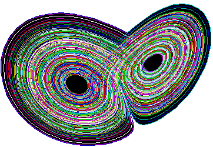

ORDINE NEL CAOS
Informazioni apparentemente aleatorie raccolte in passato oggi possono essere spiegate in termini di leggi semplici.
I sistemi caotici non sono casuali, anche se possono apparire tali. Hanno delle caratteristiche molto semplici:
-
I sistemi caotici sono deterministici. Questo significa che posseggono delle determinate equazioni che regolano il loro comportamento.
-
I sistemi caotici sono molto sensibili alle condizioni iniziali. Una piccolissima differenza nella determinazione del punto di partenza può portare a risultati completamenti differenti. Questo rende il sistema impredicibile sul lungo periodo.
-
I sistemi caotici appaiono essere disordinati, persino casuali, ma non lo sono. Sotto l'apparente casualità si nasconde un certo tipo di ordine e modelli. In verità i sistemi casuali non sono caotici. I sistemi predicibili della fisica classica sono delle eccezioni.
ATTRATTORI COSMICI
La scienza del caos ha trovato 4 tipi di Attrattori Cosmici:
-
l'Attrattore Punto
-
l'Attrattore Ciclo
-
l'Attrattore Toro
-
l'Attrattore Strano
Sebbene conosciuti come i quattro attrattori caotici, sono in realtà l'opposto. Sono gli Attrattori Cosmici che portano alla luce l'ordine nel caos. Ovunque noi vediamo un ordine e una similarità sulle scale nascosti, come viene mostrato geometricamente dagli insiemi di Mandelbrot e Julia. Questo ordine nascosto è basato su uno dei quattro Attrattori, l'Attrattore Strano. Gli altri Attrattori sono chiamati l'Attrattore Punto, l'Attrattore Circuito (oppure Ciclo) e l'Attrattore Toro. I quattro attrattori agiscono su tutti i livelli di realtà.
Il mondo reale non è totalmente ordinato come si credeva precedentemente. E' fondamentalmente disordinato, caotico, ma contiene attrattori caotici che creano figure di ordine nel tempo. Nel computer la corrente elettrica crea automaticamente l'iterazione.
L'attrattore Punto

L'attrattore Punto è il modo più semplice di riportare ordine nel caos. Con questo attrattore in gioco una persona è attratta invariabilmente da una particolare attività, o repulsa da un'altra, come i poli magnetici positivo e negativo. Con la forza di attrazione positiva tutti i percorsi sembrano portare alla stessa destinazione; con la repulsione negativa, tutto parte dallo stesso luogo. Un magnete positivo è attratto da uno negativo, un pendolo rallenta con l'attrito e la resistenza dell'aria, tutti dimostrano come lavora l'attrattore. E' un bianco-nero, buono-cattivo.
L'attrattore Ciclo
Con l'attrattore Ciclo una persona è attratta prima da una cosa e poi da un'altra, come un magnete circolare, prima attrae, poi respinge, poi attrae di nuovo. Nell'ottica di questo ciclo una persona può alternarsi avanti e indietro da un insieme di due o più attività. Sebbene non sia semplice e diretto come l'attrattore Punto, c'è ancora regolarità e semplicità negli eventi ciclici.
Un esempio è il desiderio di dormire alla fine del giorno, che quando gratificato naturalmente permette di desiderare di essere attivi all'inizio di un nuovo giorno, seguito molto più tardi da un desiderio di dormire ancora, e così via.
In Natura può essere visto in molti modi; per esempio, il sistema preda-predatore, dove le popolazioni delle prede e dei predatori seguono dei cicli fra un minimo ed un massimo. L'attrattore ciclico è più complesso della semplice attrazione o repulsione dell'attrattore Punto.
L'attrattore Toro
Con l'attrattore Toro c'è un ciclo più complesso. Con l'attrattore Toro c'è un più alto grado di irregolarità e complessità nella forma, soprattutto se confrontato con gli attrattori Ciclo e Punto. Ma le predizioni possono essere ancora fatte, la forma è fissata e finita. Matematicamente il Toro è costituito da un cerchio spiraleggiante su molti piani che può , o non può, eventualmente agganciarsi con se stesso dopo aver completato una o più rivoluzioni complete.
Un esempio di attrattore Toro al lavoro potrebbe essere dato da un insieme più complesso di eventi attrattivi che capitano ad una persona a molti livelli nel corso dell'anno, e si ripetono poi ancora, anno dopo anno. Per esempio, un desiderio di giocare a golf ciascuna estate, fare un'escursione a ciascuna cascata, e mangiare e bere troppo in vacanza.
In Natura l'esempio è dato dalla complessa iterazione di un numero di specie interdipendenti: la popolazione di una delle specie di predatori è in relazione con una di prede che a sua volta ha le sue prede. Per esempio l'ampiezza della popolazione di insetti ha effetto sull'ampiezza della popolazione delle rane, la quale ha effetto su quella dei suoi predatori, le trote, la quale ritorna i suoi effetti sui suoi predatori, i lucci. Sfortunatamente, anche molti uomini sono soggetti alle influenze complesse, ma predicibili dell'attrattore Toro.
L'attrattore Strano

Abbiamo bisogno di uscire dall'influenza deterministica degli attrattori Punto, Ciclo e Toro nell'impredicibilità dell'attrattore Strano. Questo attrattore è la base dell'auto-organizzazione. In apparenza sembra essere Caos puro, ma c'è sempre un ordine di tipo adatto che appare solo quando lo inquadriamo nella giusta prospettiva.
Un attrattore strano è speciale in quanto può prevedere alcune caratteristiche di un modello caotico in grande dettaglio senza poter assegnare una posizione spaziale specifica al modello. Un semplice esempio in natura sono le correnti di convezione in una scatola chiusa riempita con un gas e collocato su un elemento di riscaldamento uniforme. Lo stato iniziale del sistema può essere descritto da pochi semplici equazioni, che possono prevedere il comportamento generale e grandezza delle correnti di convezione all'interno del gas nel tempo con grande precisione. La natura caotica di equazioni turbolenza, tuttavia, fa sì che le correnti appaiono casualmente entro il gas. E' teoricamente impossibile prevedere la posizione esatta di eventuali correnti di convezione in un tale sistema.